The Shortests Path Problem¶
Lars plans to go from Aalborg to Aarhus and he wants to save fuel.
- Assuming fuel consumption is prorpotional to travel distance
One possible solution is:
- Model road network as weighted graph
- Enumerate all paths from Aalborg to Aarhus
- Add upp the lengths of roads in each path and selected the paht with shortest sum of lengths
This is verty ineffecient because it examines a lot of paths that are note worth considering.
Weighted, directed graph G = (V, E) with a weight function w:E\rarr \R
A path on G:
p=<(v_0,v_1),(v_1,v_2),...,(v,_{k-1},v_k)>
w(v_0,v_1)\space w(v_1,v_2)\space\space w(v,_{k-1},v_k)
Weight of a path is:
w(p)=\Sigma^{k-1}_{i=0}w(v_i,v_{i+1})
Given two vertices u and v in V,
- More than one path exists to go from u to v, eg. p_1,p_2,...,p_n
- Each path has a weight w(p_1),w(p_2),...,w(p_n)
The shortests-path weight, denoted as \delta(u, v), from u to v:
-
min(w(p_1),w(p_2),...,w(p_n))
-
defined as:
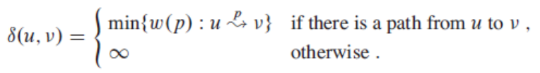
The shortest path between u and v is a path p with the short-path weight w(p)=\delta(u,v)
Problems¶
Single-source
Find a shortest path from a given source (vertex s) to each of the vertices that are reachable from s.
Single-pair
Given two vertices, find a shortest path between them.
- Solution to single-source also solves this.
All-pairs
Find shortest-paths for every pair of vertices.
- Running a single-source algorithm once from each vertex
- More efficient method: Not covered in AD1
Shortest-paths for un-weighted graphs.
- BFS, lecture 10.
Negative weights¶
If weights are non-negative, shortest paths are well-defined.
Negative weights effect shortest-path weights?
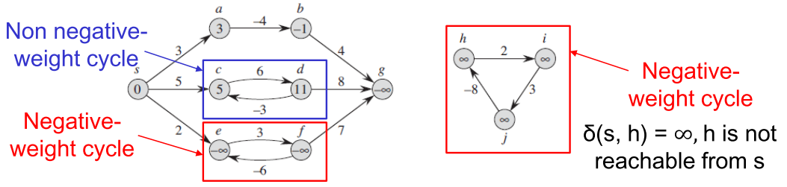
Cycles¶
A path <v_0,v_1,...,v_i,...,v_j,...,v_k> forms a cycle, if v_i=v_j
Shortest paths have NO cycles.
- Negative-weight cycles
- No. Otherwise, shortest paths are not well-defined anymore.
- Positive-weight cycles
- No. Otherwise, we could get shorter paths by removing the cycles.
- 0-weight cycles
- No. We can just repeatedly remove the 0-weight cycles to form another shortest path, until the path becomes cycle free.
Any acyclic path in a graph G = (V, E) contains at most |V| distinct vertices and at most |V|-1 edges.
- This is used by Bellman-Ford algorithm
Shortest Paths Tree¶
The result of shortest path algorithms.
A shortest paths tree.
- The shortest paths tree is a tree with the source vertex s as the root
- It records a shortest path from the source vertex s to each vertex v that is reachable from s.
Each vertex v
- v.parent() records the predecessor of v in its shortest path
- v.d() records a shortest-path weight from s to v.
Relaxation Technique¶
For each vertex v in the graph, we maintain v.d():
- Estimate the weight of a shortest path from s to v.
- Initialize v.d() to \infin in the beginning.
- Update, ie. decrease the value of v.d() during the search.
Intuition
- Check whether a new path from s, via u, to v, can improve the existing shortest path from s to v.
- w(s,u)+w(u,v) vs w(s,v)
- is u.d +w(u,v)<v.d ?
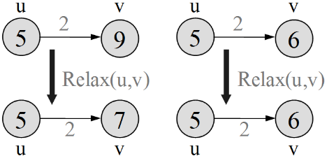
1 2 3 4 | |
Dijkstra's Algorithm¶
Works fro graphs with non-negative edge weights
Input
- Directed, weighted graph G = (V, E)
- A weight function w:E\rarr\R
- A source vertex s.
Output
- A set of vertices S, |S|=|V|
- Each vertex u\in S has a value for u.d() and for u.parent()
- If u is not reachable from s, u.d() = \infin
Intuition
- Maintain a set S of visited vertices, and each time
- 1) select a vertex u that is the "closest"* from s, and add it to S
- 2) relax all edges from u, ie. check whether going through u can improve the shortest-path weight of u's neighbours.
* "Closest" = Least shortest-path weights (a priority queue prioritized on u.d())
Pseudocode¶
A little different from book in syntax, see CLRS p. 658
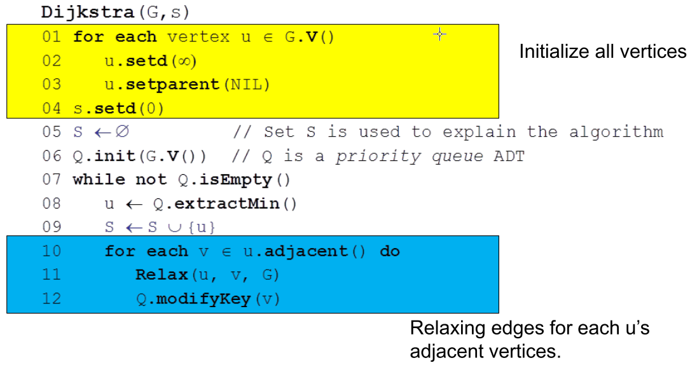
Running Example¶
Explained in Lecture-12 slide 18-21
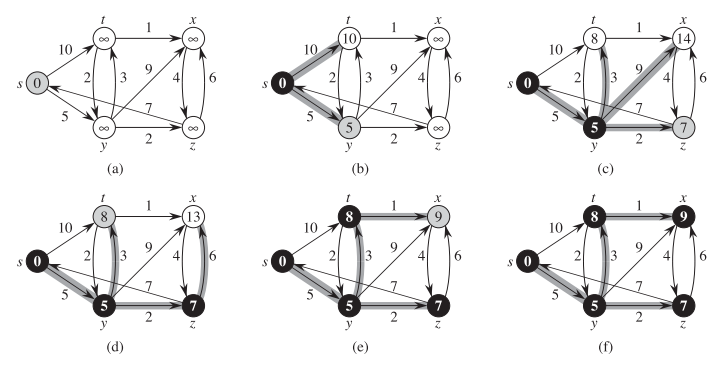
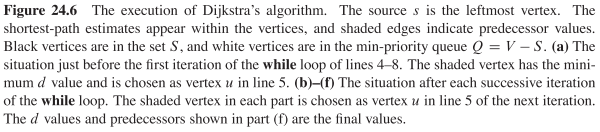
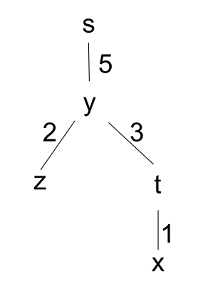
Running Time¶
Analysis in Lecture-12 slide 23-24
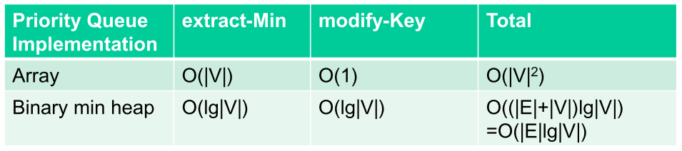
Correctness¶
Analysis in Lecture-12 slide 25-28
Bellman-Ford Algorithm¶
Dijkstra's doesn't work when there are negative edges.
- Intuition - We cannot guarantee that the length of a path increases when more edges are included.
Bellman-Ford alg. can handle a graph where edges have negative weights (but no negative-weight cycles)
Input
- Directed, weighted graph G = (V, E)
- A weight function w:E\rarr\R
- A source vertex s.
Output
- Boolean value:
- False = detects negative-weight cycles
-
True = returns the shortest path-tree
-
If Boolean value = true, a set of vertices S, |S|=|V|
- Each vertex u\in S has a value for u.d() and for u.parent()
- If u is not reachable from s, u.d() = \infin
Pseudocode¶

Running Example¶
Explained in Lecture-11 slide 30-34
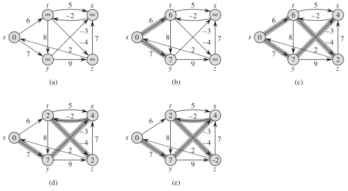
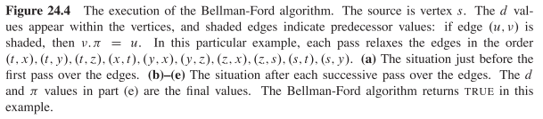
Correctness¶
Based on Path Relaxation Property
Analysis in lecture-12 slide 35-37
Shortest Path in DAGs¶
- Topologically sort the DAG
- Relax the edges of vertices according to the topologically sorted order of vertices.
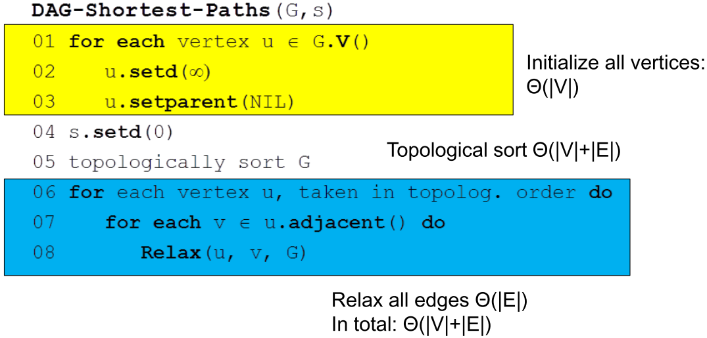
Running Example¶
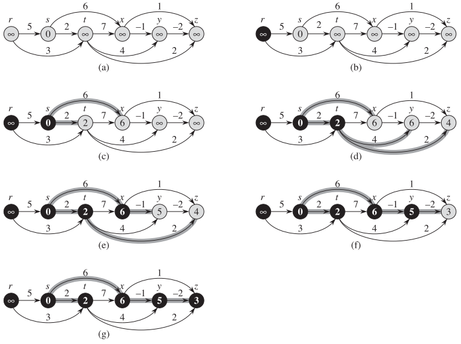
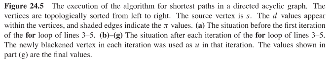
Correctness¶
Based on Path Relaxation Property
Analysis in lecture-12 slide 41 + 35-37